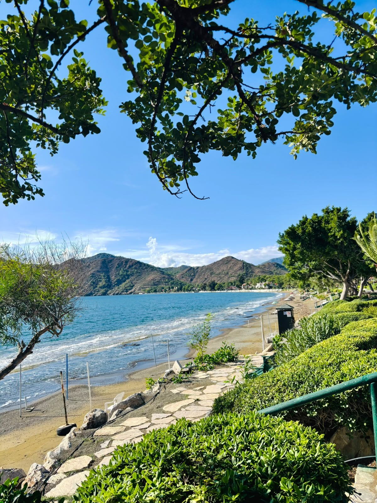
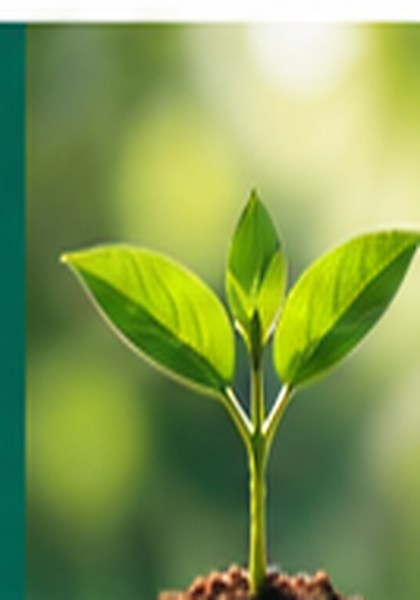
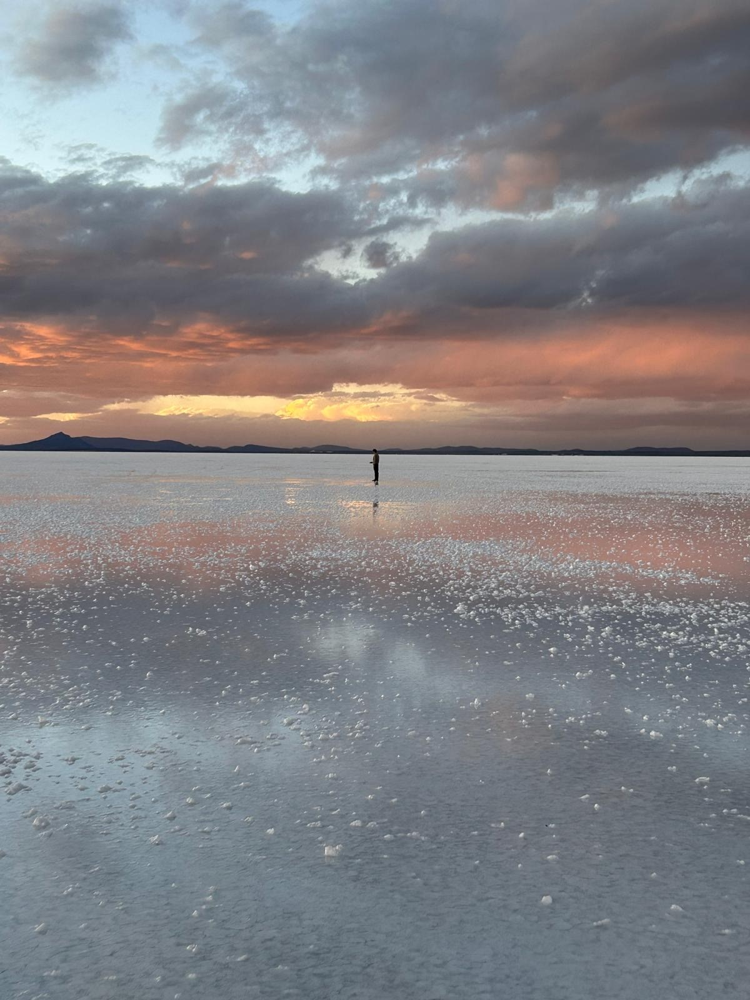
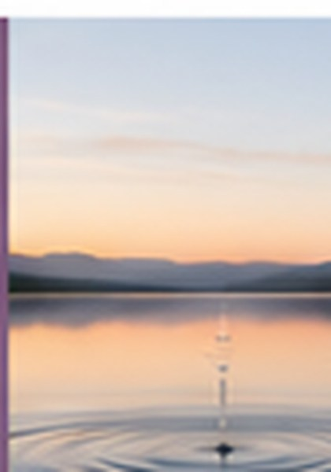
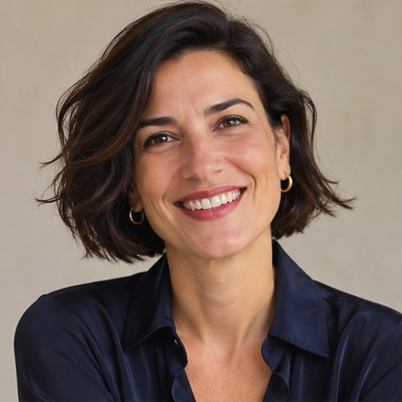
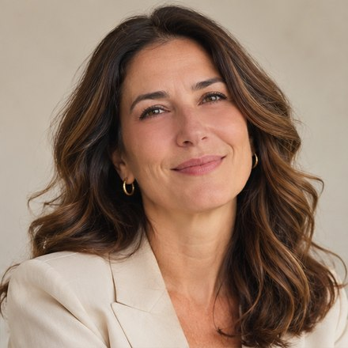
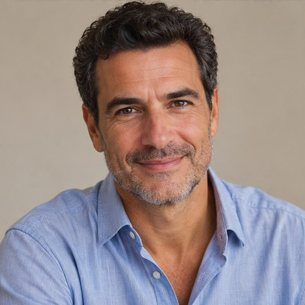
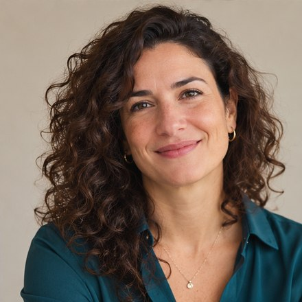

Filantropi ne demek?
Kök anlamıyla “insan sevgisi”. Bugünse iyi niyeti, bilgiyle, kaynakla ve stratejiyle buluşturup kalıcı toplumsal değişim yaratma yaklaşımı.
Filantropi bir ürün değil, bir yolculuktur. Güven, derin düşünme ve adanmışlık üzerine inşa edilir. Eğer iyi niyetinizi kalıcı toplumsal etkiye dönüştürmeye hazırsanız, bu yolculuğu birlikte tasarlamaktan memnuniyet duyarız.
LinkedIn'de BağlanalımVakıflara, şirketlere, ailelere ve bireysel hayırseverlere stratejik filantropi, uygulama ve sosyal etki danışmanlığı sunuyoruz.
Daha fazlasını keşfetKök anlamıyla “insan sevgisi”. Bugünse iyi niyeti, bilgiyle, kaynakla ve stratejiyle buluşturup kalıcı toplumsal değişim yaratma yaklaşımı.
Bağış yapmanın ötesinde, vakıfların ve kurumların daha bilinçli kararlar alabileceği, uygulamayı güçlendirebileceği ve etkiyi ölçebileceği bir danışmanlık alanı oluşturmak için.
Türkiye’de güçlü bir verme kültürü var. Bu gücü strateji, güven, iş birliği ve ölçülebilir etkiyle birleştirecek profesyonel yaklaşımlara ihtiyaç giderek artıyor.
Philanthropy Partners, topluma katkı sunmak isteyen kişi ve kurumlarla güvenilir sivil toplum ekosistemi arasında stratejik iş birlikleri kurarak iyi niyeti kalıcı etkiye dönüştürmeye odaklanan bağımsız bir filantropi danışmanlık platformudur.
Philanthropy, kök anlamıyla insan sevgisi demek. Bizim için bu sevginin gücü, doğru strateji ve güvene dayalı ortaklıklarla buluştuğunda ortaya çıkıyor.

İyi niyet, değişimin başlangıcıdır; tek başına kalıcı bir toplumsal etki yaratmaya yetmez. Stratejik filantropi; kaynakları, bilgiyi ve insanları ortak bir amaç etrafında birleştirir.
Amacımız yalnızca bugünün ihtiyaçlarına destek vermek değil, yarının daha iyi işleyecek sistemlerine katkı sunmak. Uzun vadeli iş birlikleri ve güçlü ekosistemler, tek tek projelerin ötesinde sonuçlar yaratabilir.
Yaklaşımımız, kurumsal yönetim kurullarında, vakıf liderliğinde ve uluslararası filantropi ağlarında edinilmiş uygulama deneyimine dayanıyor. Stratejiyi sahadaki gerçeklerle birlikte düşünüyoruz.
Yol haritasının yalnızca hazırlanmasına değil, doğru ortaklarla hayata geçmesine, ölçülmesine ve gelişmesine de eşlik ediyoruz.
Her kurumun, her ailenin ve her toplumsal sorunun kendine özgü bir hikâyesi var. Hazır reçeteler yerine, ihtiyaçlara göre tasarlanmış, uygulanabilir yollar geliştiriyoruz.
Hedefleri, değerleri ve gerçek ihtiyacı anlarız.
Stratejiyi, programı ve iş birliklerini birlikte kurarız.
Uygulamaya ve kapasite geliştirmeye eşlik ederiz.
Çıkan sonuçları değerlendirir, öğrenir, güçlendiririz.
Birlikte bakınca yeni yollar açılır.
Her iş birliği gerçek bir soruyla başlar. Strateji, program, yönetişim ve etki yönetimini ihtiyacınıza göre birlikte şekillendiriyoruz.
Soru: Mevcut filantropi çalışmalarımızın güçlü yanları ve gelişim alanları neler?
Çözüm: Vakıf, şirket, aile veya bireysel hayırseverin mevcut yaklaşımını değerlendirir; güçlü yönleri, öncelikleri ve gelişim fırsatlarını ortaya koyarız.
Görüşmeler ve ihtiyaca göre geliştirilen değerlendirme araçlarıyla filantropi stratejisini, yönetişimi, programları ve etki yaklaşımını ele alır; kurumun bulunduğu aşamaya uygun bir yol haritası oluştururuz.
Soru: Nasıl bir etki yaratmak istiyoruz; nereden başlamalıyız?
Çözüm: Değerleri, öncelikleri ve odak alanlarını netleştirerek kaynaklarla uyumlu, uzun vadeli bir filantropi stratejisi geliştiririz.
Her kurumun ve bireyin filantropi yolculuğu kendine özgüdür. Stratejiyi kurumsal hedefler, toplumsal ihtiyaçlar ve ekosistem gerçekleriyle birlikte ele alır; hedefleri ve izlenecek yolu somutlaştırırız.

Soru: Hayal ettiğimiz etkiyi nasıl hayata geçirebiliriz?
Çözüm: Araştırma, saha verisi ve paydaş görüşlerinden hareketle programı, ortakları, uygulama adımlarını ve etki çerçevesini birlikte tasarlarız.
Hibe programlarından kamu-özel sektör iş birliklerine, toplum temelli girişimlerden ekosistem ortaklıklarına uzanan programları fikirden uygulamaya taşırız. Sürece hazır çözümlerle değil, sorunun kök nedenlerini anlayarak başlarız; izleme ve öğrenmeyi en baştan kurgularız.

Soru: Hibelerimizi gerçek etkiye nasıl dönüştürebiliriz?
Çözüm: Hibe stratejisini, başvuru ve değerlendirme süreçlerini, uygulamayı ve izlemeyi güven temelli yaklaşımla tasarlar ve yönetiriz.
Tema, coğrafi öncelikler, hibe tutarları, değerlendirme komiteleri ve operasyonel süreçlerde destek veririz. Sahadaki uygulayıcıların deneyimine değer verir, gereksiz bürokrasiyi azaltan, şeffaf ve uzun vadeli ortaklıkları güçlendiren güven temelli filantropi anlayışını benimseriz. Başarıyı yalnızca dağıtılan kaynakla değil, yarattığı değişimle izleriz.

Soru: Daha büyük etkiyi kimlerle birlikte yaratabiliriz?
Çözüm: Kamu, özel sektör, vakıflar, akademi ve sivil toplum arasında ortak amaç ve güvene dayalı iş birlikleri geliştiririz.
Yalnızca doğru kurumları tanıştırmakla kalmayız; ortak vizyonu, rolleri ve uzun vadeli çalışma modelini birlikte kurgularız. Ulusal ve uluslararası ağları, kaynakları ve saha bilgisini buluşturarak kolektif etkiyi güçlendiren ortaklıklar oluştururuz.
Soru: Yeni vakfımızı ya da mevcut yapımızı nasıl daha sağlam kurabiliriz?
Çözüm: Kuruluş hedeflerinden yönetim kurulu rollerine kadar yönetişim ve kurumsal yapılanmayı stratejik bir yaklaşımla ele alırız.
Yeni bir vakıf kurulurken veya mevcut bir yapı gelişirken amaç, odak alanları, karar alma süreçleri ve sürdürülebilir işleyişin birlikte tasarlanmasını destekleriz. Danışmanlık kapsamında gerektiğinde ilgili hukuk ve mevzuat uzmanlarıyla çalışılması ayrıca planlanır.
Soru: Kaç kişiye ulaştığımızı biliyoruz; peki neyi değiştirdik?
Çözüm: Etki hedeflerini ve göstergeleri belirler, izleme ve öğrenmeyi karar süreçlerini geliştiren bir sisteme dönüştürürüz.
Başından itibaren bir etki çerçevesi oluşturulmasına, öğrenme ve değerlendirme mekanizmalarının tasarlanmasına yardımcı oluruz. Böylece kurumlar sadece faaliyetleri değil, desteklenen çalışmaların yarattığı dönüşümü de anlayabilir.
Ana hizmetlerin yanında, karar alma ve yönetim kapasitesini güçlendiren özel danışmanlık modelleri sunuyoruz.
Yönetim kurulları, başkanları ve üst yönetim ekipleri için bağımsız bir düşünce ortağıyız. Stratejik kararlar, yönetişim, liderlik geçişleri ve kurumsal dönüşümde Nevgül Bilsel Safkan’ın farklı sektörlerdeki yönetim deneyiminden yararlanıyoruz.
Bireylerin ve ailelerin değerlerini, odak alanlarını ve bırakmak istedikleri toplumsal mirası netleştirmelerine yardımcı oluruz. Filantropi portföyü, güvenilir ortaklar ve kuşaklar arası katılım için kişiye özel bir yol geliştiririz.
Her kurumun her alanda tam zamanlı yöneticiye ihtiyacı olmayabilir. İletişim, finans, hibe yönetimi ve sosyal etki gibi alanlarda deneyimli uzmanlığı, ihtiyaca göre esnek dönemlerle kurumsal ekibe dahil ederiz.
Stratejisini yenilemek, yönetim kapasitesini geliştirmek ve etkisini büyütmek isteyenler.
Filantropi hedefini, kurumsal yapısını ve yönetişimini baştan doğru kurmak isteyenler.
Toplumsal yatırımlarını daha stratejik, etkili ve sürdürülebilir hale getirmek isteyenler.
Değerlerini, kaynaklarını ve uzun vadeli toplumsal etkilerini birlikte düşünmek isteyenler.
Çünkü en karmaşık toplumsal sorunlar tek bir kişinin uzmanlığıyla çözülemez. Farklı disiplinler, kurumlar ve bakış açıları aynı amaç etrafında buluştuğunda gerçek dönüşüm mümkün olur. Bizim için “Partners”, yalnızca ismimiz değil, çalışma biçimimiz.

Filantropi Stratejisi · Temsili

Program Tasarımı · Temsili

Yönetişim · Temsili

Etki & Öğrenme · Temsili
Aşağıdaki profiller tasarım amaçlı temsili görsellerdir. Gerçek partner isimleri ve görevleri yayın öncesi eklenecektir.
Kalıcı değişim, güvenle büyür.
Size en yakın cümleyi seçin. Durumunuzu anlamak için bir sonraki sorudan başlayalım.
Şu anda hangisi size daha yakın?
Hangi kararı almakta zorlanıyorsunuz?
İlk olarak neye ihtiyacınız var?
Bugün elinizde ne var?
Bu konu nerede karşınıza çıkıyor?
Hangisi ilerlemenizi en çok kolaylaştırır?
Nevgül Bilsel Safkan · Kurucumuzun kendi anlatımı
Stratejik Filantropi Danışmanı ve Philanthropy Partners Kurucusu
Nevgül Bilsel Safkan, kurumsal liderlik, finans, yönetişim ve uluslararası filantropi alanlarında otuz yılı aşkın deneyime sahip. Özel sektördeki üst düzey yöneticilik kariyerinin ardından sekiz yıl Sabancı Vakfı Genel Müdürü olarak görev yaptı.
Bu dönemde, toplumsal fayda programlarının tasarımından farklı sektörlerin iş birliği içinde çalışmasına ve etki ölçümüne kadar geniş bir alanda liderlik etti. TÜSEV, ERG, Philea ve uluslararası platformlardaki deneyimi, Philanthropy Partners’ın güven ve uygulama odağının temelini oluşturuyor.
Sabancı Vakfı döneminden örnekler: 10 binden fazla kadına ulaşan programlar; 39 ilçede 78 okula ölçeklenen okul iklimi girişimi; bazı çalışmalarda 4,14 SROI ölçümü. Bu sonuçlar kurucunun önceki görev deneyimine aittir.
Vizyonumuz: Türkiye’nin philanthropy platformu olmak.
“Hayatım boyunca daha iyi bir gelecek bırakmak isteyen insanlarla çalıştım. Şunu öğrendim: İyi niyet tek başına yeterli değil. Kalıcı etki doğru stratejiyle, doğru ortaklarla ve her şeyden önce güvenle inşa ediliyor. Philanthropy Partners’ı bu inançla kurdum.”Tanışalım
İyi sorular, daha iyi kararların başlangıcı. Her kurumun kendine sorması gereken üç soru:
Faaliyet sayısının ötesinde, insanların hayatında nasıl bir değişim yarattık?
Kaynakları daha doğru önceliklerde birleştirsek ne değişirdi?
İş birliği yapmak, tek başına ilerlemekten daha fazlasını sağlayabilir mi?
İyiliği kalıcı etkiye dönüştürelim.
Bir sorunuz, bir fikriniz ya da yeni bir filantropi yolculuğunuz varsa, birlikte düşünelim.
İletişim adresi ve görüşme talep bağlantısı yayın öncesinde eklenecek.
Bu çalışma yayına hazırlık taslağıdır. Temsili partner görselleri ve iletişim bağlantıları yayın öncesinde doğrulanmalıdır.